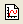
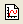

|
|
|
このチュートリアルでは、Originのワークスペースについて紹介しています。 プロジェクトを作成するための様々な種類のOriginウィンドウをはじめ、これらのウィンドウをプロジェクトエクスプローラーで操作する方法、オブジェクトマネージャでレイヤとプロットを操作する方法、アプリギャラリーでアプリを管理する方法を学習します。
必要なOriginのバージョン:Origin 2016 SR0以降
このチュートリアルでは、以下の項目について解説します。
OriginのタイトルバーにはOrigin(Pro)のバージョンと開いているプロジェクト名、プロジェクト内での現在のフォルダ名が表示され、移動やサイズ変更など標準のウィンドウ操作が可能です。
ステータスバーは、Originのワークスペース下部に配置され、スタートメニューを有します。メッセージや自動更新のステータス、選択したワークシートセルの統計的概要（ユーザがカスタマイズできます）、子ウィンドウのテーマ（存在する場合）、最後にアクティブだったワークブック、現在のウィンドウに対する角度の単位などが表示されます。
ステータスバーのショートカットメニューにある自動アップデートの項目はすべての自動的な再計算操作の現在の状態と関連しています。通常、 ステータスバーにはAU: ONと表示されており、これは入力データの変更によって再計算モード を自動と設定することで出力が自動的に再計算されることを表しています。 このような操作が多くあって動作が遅くなる場合には自動アップデート:OFFに変更してください。.計算の準備ができてから自動アップデートを戻すか、出力の再計算を手動に設定してください。 |
Originのメニューはどの子ウィンドウがアクティブになっているかで、ダイナミックに表示が変わります。 ヘルプやファイル、編集など、どの子ウィンドウでも表示されるものもありますが、メニューの内容が異なることがあります。
つまり、メニューは“コンテキストによる”といえます。どの子ウィンドウをアクティブにしているかで表示が変わるのです。
Note: 新しいウィンドウを追加するにはファイル：新規作成を選択するか、標準ツールバーにあるボタンを使用します。 子ウィンドウは、Originのワークスペース内での移動やサイズ変更等の標準的な操作が可能です。ウィンドウメニューにはワークスペース内での子ウィンドウ表示を制御するオプション（重ねて並べる、整列等）があります。ワークスペースには以下のような子ウィンドウを開くことができます。
ワークブック-Originのワークブックはデータを管理する基本構造となっています。Originのワークブックは、1つ以上のOriginワークシートで構成されます。(最大255まで)
グラフ-Originは60種類以上のグラフをデフォルトで作成でき、それぞれ組み込みグラフテンプレートを作成することもできます。 グラフウィンドウはワークシートセルに埋め込むこともできます。
行列-Originの行列はデータやイメージを保持し、3Dグラフを作成するのに必要とされています。
ノート - ノートウィンドウはテキストのみを入力するための子ウィンドウで、分析手順を記録したり、同僚や学生に注意事項を知らせたりする時に使用します。ワークシートセルに埋め込むこともできます。
レイアウトとExcelワークブック（Excelがインストールされている場合）
Originのワークブックはデータを管理する基本構造となっています。それぞれのワークブックは、1つ以上のOriginワークシートで構成されます。それぞれのワークシートは、通常、ひとつまたはそれ以上のワークシート列やデータセットで構成されます。Originの列にはX,Y,Z,yError等のような異なる列タイプ(「属性」)があります。これらのユーザが設定できる属性は作図や解析でどのようにデータを扱うかを決定するのに使用されます。
OriginおよびOriginProのプロジェクトには、任意の数のワークブックを含めることができます（システムリソースにより制限されます）。学生版で保存されるプロジェクトは、ウィンドウ数が合計30ウィンドウまでに制限されています（グラフ、ワークブック、行列ブックなど）。
以下の操作を実行し、Originのワークブックの操作方法についての詳細を学習できます。
| Note: ミニツールバーのセクションでこれらのウィンドウを再度利用するので、このワークブックとグラフを削除しないでください。 |
グラフウィンドウは実験データや解析結果をグラフィカルに描写するための入れ物です。グラフウィンドウには、1つのレイヤに1つのデータが含まれていることもあれば、複数のレイヤに複数のデータが含まれていることもあります、
グラフレイヤは、Originグラフの基本単位です。レイヤには、スケール値のセット、1つまたはそれ以上のデータプロット、テキストラベル、描画オブジェクト、グラフ凡例/カラースケール、ボタンオブジェクトなどが含まれます。また、グラフレイヤは作成、サイズ変更、移動等が行えます。
以下の操作をして、グラフウィンドウのレイヤを整理する方法を学びます。

ほとんどの場合、データを集計し、操作するためにワークシートを使用し、データをプロットするためにグラフウィンドウを使用します。
Originの行列ウィンドウは、Originの行列データを1つ、またそれ以上格納します。それぞれの行列ウィンドウは、1つ以上の行列シートを含めることができ、行列シートは複数の行列オブジェクトを含むことができます。行列オブジェクトは、Z値のベクトルです。Z値は、その相対的な行および列の行列中の位置によるX及びYの次元が互いに関連しています。行列は、等高線図や色付き曲面図のようなOriginの3Dグラフを作成する前段階のもので、 3Dデータを表示したり、操作するのに使われ、さらにOriginの画像処理や画像分析を行うのに使われます。後のチュートリアルで3Dプロットを作成するためにOriginの行列を使用する方法を説明しています。
ツールバーのカスタマイズダイアログボックスでは、ツールバーやボタンの表示/非表示を制御できます。
全てのツールボタンはドッキングされている位置からドラッグしてフローティングウィンドウとして表示させることができます。フローティングウィンドウでは、ウィンドウを非表示にするためにXボタンの横に追加制御機能があります。プッシュピンはウィンドウをドッキングし、必要に応じて最小化するかどうかを制御可能です。
以下が一般的なツールバーです
標準ツールバー

ワークシートデータ操作ツールバー

グラフ操作ツールバー
書式ツールバー

スタイルツールバー
プロット操作・オブジェクト作成ツールバー (Originのワークスペース左側に縦方向で表示)

2Dグラフギャラリーツールバー
3Dおよび等高線グラフツールバー
マスク操作ツールバー
ミニツールバーは編集や構成作業において一般的なワークブックやグラフ、行列で使える状況依存ツールです。
プロジェクトエクスプローラは、Originのプロジェクトファイルを効率よく、整理・管理するためのツールです。たくさんの子ウィンドウを開いてOriginを利用している場合、特に役立つものとなります。プロジェクトエクスプローラを利用することで、フォルダ構造でプロジェクト内のウィンドウを管理することができます。
最初にOriginを開いたとき、プロジェクトエクスプローラはワークスペースの端に格納されています。ほかのウィンドウの端にドッキングすることやワークスペース内にフロートさせておくことも可能です。プロジェクトエクスプローラは、ワークスペースの一部を占めるので、プロジェクト内にフォルダを作成したら、プロジェクトエクスプローラを閉じたいと感じるかもしれません。プロジェクトエクスプローラを閉じたり、開いたりするには、自動的に隠すボタンを押すか、キーボードでAlt + 1 を押すか、メニューから表示：プロジェクトエクスプローラを選択します。
プロジェクトエクスプローラは自動的に隠す、非表示、フロート、ドッキングができます。もうひとつの要素として、垂直または水平に揃えることも出来ます。
Note：他のドッキング自在なウィンドウ（オブジェクトマネージャー、アプリ、メッセージログ、スマートヒントログ等）も同様に表示プロパティを変えることが出来ます。
プロジェクトエクスプローラには、フォルダを表示する「フォルダパネル」とその内容を表示する「コンテンツパネル」の2つのパネル(領域)があります。コンテンツパネルにはアクティブフォルダ内のすべてのオブジェクトを表示します。新しいOriginのセッションを開始して、「新規ワークブック」 、 「新グラフウィンドウ」 、「新行列ウィンドウ」のボタンをクリックすると空白のウィンドウを作成できます。コンテンツパネルには、これらのウィンドウアイコンが表示されます。アイコンをダブルクリックしてウィンドウを表示/非表示にします。
、 「新グラフウィンドウ」 、「新行列ウィンドウ」のボタンをクリックすると空白のウィンドウを作成できます。コンテンツパネルには、これらのウィンドウアイコンが表示されます。アイコンをダブルクリックしてウィンドウを表示/非表示にします。
新しいフォルダを作成するには、フォルダパネル内のプロジェクトフォルダ(またはサブフォルダ)で右クリックし、ショートカットメニューから「新規フォルダ」を選択します。
サブフォルダを作成したら、プロジェクトエクスプローラウィンドウ内でドラッグ＆ドロップして、各サブフォルダ間でウィンドウを移動することができます。
オブジェクトマネージャは、アクティブなグラフウィンドウにあるレイヤやプロットを見たり、操作したりするのを助ける階層構造を提供します。複数のレイヤを持つグラフや、複数のプロットを持つ個々のレイヤある場合、特に便利です。
最初にOriginを開いたとき、オブジェクトマネージャはワークスペースの右側に格納されています。プロジェクトエクスプローラのように、ほかのウィンドウの端にドッキングすることやワークスペース内にフロートさせておくことも可能です。オブジェクトマネージャーを開いたり閉じたりするには、メニューから表示：オブジェクトマネージャーを選択します。
オブジェクトマネージャはアクティブなグラフウィンドウに対応して使用します。グラフウィンドウのレイヤやプロットを選択すると、オブジェクトマネージャ内で対応している部分が選択されます。これにより、アイテムを選択して表示/非表示にすることが簡単になります。
例として、次を試します。
オブジェクトマネージャーのプロット名は、グラフの凡例と接続されています。したがって同じ名前であってもなくても、凡例のモードに使われている内容に依存します。 |
オブジェクトマネージャはレイヤやプロットの表示/非表示だけではなく、以下のことも行えます。
アプリ は、特殊なグラフ作成や解析を行うためのカスタムアプリケーションです。これらのアプリは、Originにあらかじめインストールされていません。アプリを入手したい場合は、以下の方法があります。
アプリがインストールされると、Origin画面左のアプリギャラリーウィンドウで確認することができます。
アプリ パネルでは、コンテキストメニューから新しいタブを追加することが出来、「グラフ」「解析」タブなどと名前を付けて、それぞれのタブにインストールしたアプリを振り分けることが出来ます。インストール時は自動的に「全て」タブに振り分けられます。
インストールされるとアプリのアイコンがギャラリーウィンドウに表示されます。アプリはアイコンをクリックすることで立ち上げることができます。右クリックすると、非表示などの他のオプションや、アンインストール、タブの移動などが可能になります。
ラーニングセンターダイアログは、Originを使い始めのユーザに最適です。メニューのヘルプ：ラーニングセンター を選択する、またはF11キーを押して開きます。
このダイアログを使って、次のことができます。
メッセージログは出力、結果、エラーなど、動作に関するメッセージを表示します。スクリプトウィンドウやコマンドウィンドウに表示されないメッセージを表示します。表示：メッセージログを選択またはAlt+6でメッセージログを表示/非表示させることが可能です。